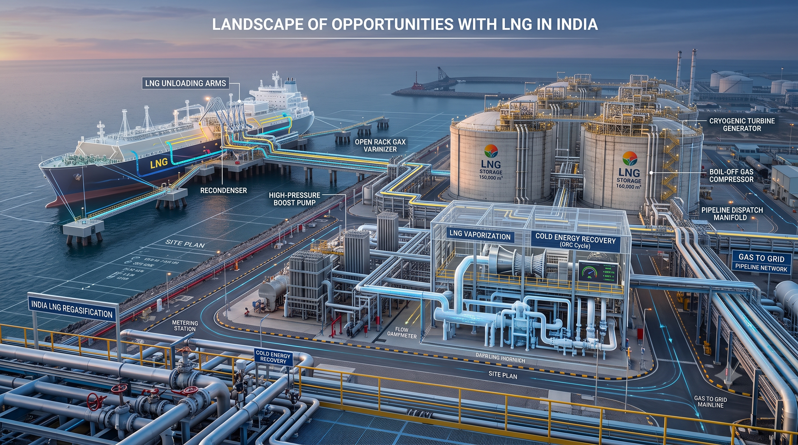

The following series is an attempt to deep dive into the LNG sector in India and idenify how cryogenic energy recovery can help the struggling LNG sector

Chilldown is a critical process that happens during the start up of cryogenic equipment such as storage tanks and transfer lines. It involves the cooling of cryogenic equipment from ambient temperature to the operating temperature of the flowing liquid cryogen. Controlled chilldown of a transfer line is essential to ensure the safe and steady flow of cryogenic fluids, as it prevents thermal stresses, pressure fluctuations, and loss of cryogen happening due to ambient heat inleaks. Chilldown is achieved typically by letting a small part of the liquid cryogen through the equipment in order to cool the walls of the equipment safely towards the operating temperatures of the cryogen. During this flow, the liquid absorbs heat from the walls and boils off, thus leading to a two-phase flow inside the lines. As the liquid cryogen undergoes various boiling regimes, the flow experiences various two-phase flow regimes which impact the thermal and hydrodynamic behavior of the chilldown process. The study of heat transfer and fluid flow of chilldown is therefore essential to design efficient chilldown systems which use as little cryogen as possible and reduce chilldown times.
India's LNG Landscape
About 70\% of India's electricity generation is from coal based. Surprsingly, natural gas and oil only account for 6% of the electicity production.
Chilldown is a critical process that happens during the start up of cryogenic equipment such as storage tanks and transfer lines. It involves the cooling of cryogenic equipment from ambient temperature to the operating temperature of the flowing liquid cryogen. Controlled chilldown of a transfer line is essential to ensure the safe and steady flow of cryogenic fluids, as it prevents thermal stresses, pressure fluctuations, and loss of cryogen happening due to ambient heat inleaks. Chilldown is achieved typically by letting a small part of the liquid cryogen through the equipment in order to cool the walls of the equipment safely towards the operating temperatures of the cryogen. During this flow, the liquid absorbs heat from the walls and boils off, thus leading to a two-phase flow inside the lines. As the liquid cryogen undergoes various boiling regimes, the flow experiences various two-phase flow regimes which impact the thermal and hydrodynamic behavior of the chilldown process. The study of heat transfer and fluid flow of chilldown is therefore essential to design efficient chilldown systems which use as little cryogen as possible and reduce chilldown times.
LNG Imports Overview
Monthly distribution metrics
Film Boiling & Heat Transfer
The current research focused on characterizing the velocity and thermal temperature profiles in the film boiling regime of the chilldown phenomena.
Film boiling occurs when the wall temperature is significantly higher than the saturation temperature of the cryogen, creating a vapor layer that insulates the liquid core from the pipe walls...
Two-Phase Flow Regimes
Understanding the transition between different flow patterns during line cool-down.
As the liquid cryogen travels down the pipeline, it undergoes transitions through film, transition, and nucleate boiling regimes, shifting from dispersed vapor flow to stratified or wavy flow patterns...
Optimization & Efficiency
Strategies to minimize cryogen consumption while maintaining structural integrity.
By optimizing mass flow rates during the initial injection phase, operators can reduce overall cooldown duration and avoid excessive boil-off gas generation...